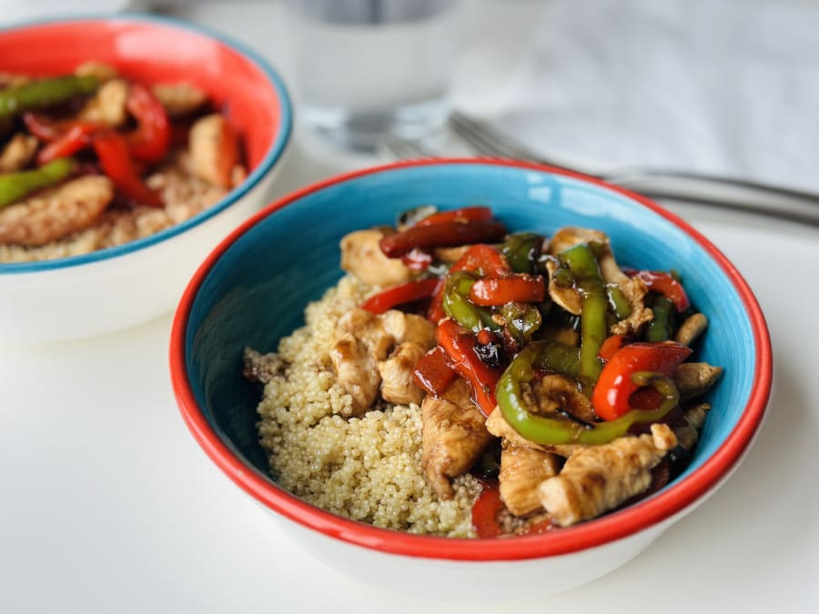

Bowl de Quinoa y Vegetales

Ingredientes
Quinoa remojada, tus verduras a disposición hechas en la sartén, cortadas finitas.
Tiempo
20-30 min.
Preparación
Cocina la quinoa, saltea las verduras en la sartén con un poco de aceite y especias.